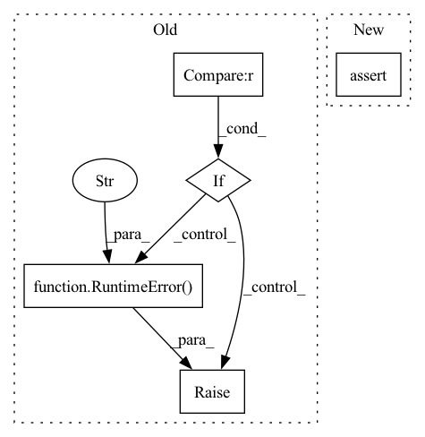

Pattern ID :16188
Before Change
for entity in locations_by_start:
if entity.start >= start and entity.end <= end:
ents_this_group.add(entity)
elif entity.start >= start and entity.start < end and entity.end > end:
end = entity.end
ents_this_group.add(entity)
elif entity.start >= end:
locations_overlapped[(start, end)] = ents_this_group
ents_this_group = {entity}
start = entity.start
end = entity.end
else:
raise RuntimeError(
"Entities overlap in an undefined fashion. This should be impossible?"
)
else:
locations_overlapped[(start, end)] = ents_this_group
return dict(locations_overlapped)
After Change
end = entity.end
ents_this_group.add(entity)
else:
assert (
entity.start >= end
), "Entities overlap in an undefined fashion. This should be impossible?"
// we"ve gone beyond the "current" location, "submit" it to locations_overlappedIn pattern: SUPERPATTERN
Frequency: 4
Non-data size: 5
Instances Fragment ID: 54098826
Project Name: astrazeneca/kazu
Commit Name: 04ca5ebe3941f12d5c290d546c245915dbce1172
Time: 2022-11-30
Author: richard.jackson4@astrazeneca.com
File Name: kazu/steps/other/merge_overlapping_ents.py
M Class Name: MergeOverlappingEntsStep
N Class Name: MergeOverlappingEntsStep
M Method Name: group_entities_by_location(2)
N Method Name: group_entities_by_location(2)
M Parent Class: BaseStep
N Parent Class: BaseStep
M File Name: kazu/steps/other/merge_overlapping_ents.py
N File Name: kazu/steps/other/merge_overlapping_ents.py
M Start Line: 133
M End Line: 152
N Start Line: 110
N End Line: 136
Before Change
def get_color(color_name):
if color_name == "red" :
return np.asarray([1.0, 0.0, 0.0])
elif color_name == "blue":
return np.asarray([0.0, 0.0, 1.0])
elif color_name == "green":
return np.asarray([0.0, 1.0, 0.0])
elif color_name == "yellow":
return np.asarray([0.0, 1.0, 1.0])
else:
raise RuntimeError(f"Unsupported color: {color_name}." )
def make_scaling_along_axis(points, axis=2, alpha=0):
if isinstance(axis, int):After Change
return np.asarray([255.0, 204.0, 102.0]) / 255.0
if color_name == "custom_blue":
return np.asarray([102.0, 153.0, 255.0]) / 255.0
assert color_name in colors.CSS4_COLORS
return np.asarray(colors.to_rgb(colors.CSS4_COLORS[color_name]))
Fragment ID: 54098831
Project Name: qinzheng93/geotransformer
Commit Name: 2232c06e294e5bb4ddcb939331a0824a31c8d7b9
Time: 2022-05-09
Author: clavichord93@hotmail.com
File Name: geotransformer/utils/open3d.py
M Class Name: AnonimousClass
N Class Name: AnonimousClass
M Method Name: get_color(1)
N Method Name: get_color(1)
M Parent Class:
N Parent Class:
M File Name: geotransformer/utils/open3d.py
N File Name: geotransformer/utils/open3d.py
M Start Line: 6
M End Line: 17
N Start Line: 7
N End Line: 12
Before Change
10: pybullet_planning.UNBOUNDED_LIMITS,
},
)
if targj is None :
raise RuntimeError("Failed to find an IK solution" )
return [targj[j] for j in self.joints]
def planj(
self, targj, obstacles=None, attachments=None, self_collisions=TrueAfter Change
def solve_ik(self, pose, **kwargs):
joint_positions = self._solve_ik_skrobot(pose, **kwargs)
assert len(joint_positions) == len(self.joints)
return joint_positions
def planj( Fragment ID: 54098830
Project Name: wkentaro/safepicking
Commit Name: 77b2ee8bb51dc2173bf8c44d46709461ba64439c
Time: 2021-03-16
Author: www.kentaro.wada@gmail.com
File Name: mercury/_pybullet/panda_robot_interface.py
M Class Name: PandaRobotInterface
N Class Name: PandaRobotInterface
M Method Name: solve_ik(2)
N Method Name: solve_ik(2)
M Parent Class:
N Parent Class:
M File Name: mercury/_pybullet/panda_robot_interface.py
N File Name: mercury/_pybullet/panda_robot_interface.py
M Start Line: 92
M End Line: 104
N Start Line: 127
N End Line: 129